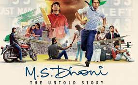
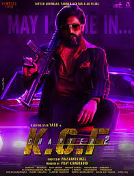
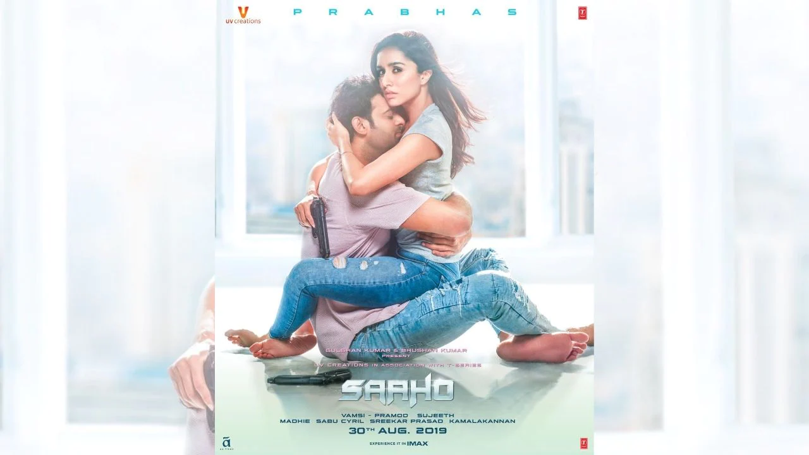
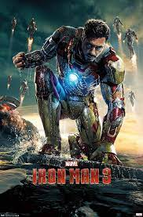
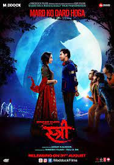

M.S. Dhoni: The Untold Story is a 2016 Indian Hindi-language biographical sports drama film written and directed by Neeraj Pandey. It is based on the life of former Test, ODI and T20I captain of the Indian national cricket team, Mahendra Singh Dhoni. The film stars the late Sushant Singh Rajput as MS Dhoni, along with Disha Patani, Kiara Advani, and Anupam Kher. The film chronicles the life of Dhoni from a young age through a series of life events.
K.G.F: Chapter 2 is a 2022 Indian Kannada-language period action film written and directed by Prashanth Neel, and produced by Vijay Kiragandur under the banner Hombale Films. The second installment in a two-part series, it serves as a sequel to the 2018 film K.G.F: Chapter 1. The film stars an ensemble cast of Yash, Sanjay Dutt, Raveena Tandon, Srinidhi Shetty, Prakash Raj, Archana Jois, Achyuth Kumar, Rao Ramesh, Vasishta N. Simha, T. S. Nagabharana and Malavika Avinash. In the film, Rocky takes over the K.G.F, and must retain his supremacy over adversaries and government officials, including Suryavardhan's brother Adheera, Ramika Sen and his employers.
Saaho is a 2019 Indian action thriller film[3] that was written and directed by Sujeeth, and produced by UV Creations It stars Prabhas in the title role, and an ensemble cast of Shraddha Kapoor, Chunky Pandey, Jackie Shroff, Arun Vijay, Neil Nitin Mukesh, Lal, Murali Sharma, Mandira Bedi, Mahesh Manjrekar, Prakash Belawadi, Tinnu Anand, Evelyn Sharma, Supreeth, Devan, and Vennela Kishore. Saaho was simultaneously made in Telugu and Hindi, and is the Hindi-film debut of Prabhas and the Telugu-film debut of Shraddha Kapoor. The film follows two covert operatives who are searching for a thief who has stolen ₹2,000 crore (US$284 million). Soon, they realise the case is linked to the death of a prominent business tycoon and an emerging gang war for the control of a megalopolis.
Iron Man 3 (titled onscreen as Iron Man Three) is a 2013 American superhero film based on the Marvel Comics character Iron Man, produced by Marvel Studios and distributed by Walt Disney Studios Motion Pictures. It is the sequel to Iron Man (2008) and Iron Man 2 (2010), and the seventh film in the Marvel Cinematic Universe (MCU). The film was directed by Shane Black from a screenplay he co-wrote with Drew Pearce, and stars Robert Downey Jr. as Tony Stark / Iron Man alongside Gwyneth Paltrow, Don Cheadle, Guy Pearce, Rebecca Hall, Stéphanie Szostak, James Badge Dale, William Sadler, Miguel Ferrer, Jon Favreau, and Ben Kingsley. In Iron Man 3, Tony Stark wrestles with the ramifications of the events of The Avengers (2012) during a national terrorism campaign on the United States led by the mysterious Mandarin.
Stree is a 2018 Indian Hindi-language comedy horror film directed by debutant Amar Kaushik in his directorial debut and produced by Dinesh Vijan and Raj & D.K. It stars Shraddha Kapoor and Rajkummar Rao alongside Pankaj Tripathi, Aparshakti Khurana and Abhishek Banerjee. The plot is based on the urban legend Nale Ba ("Come tomorrow") of Karnataka Modified as O Stree Kal Aana ("Oh woman come tomorrow") in the film.
